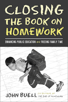

A ringing indictment of homework and what can replace it
A ringing indictment of homework and what can replace it


 A ringing indictment of homework and what can replace it
A ringing indictment of homework and what can replace it

|  |
Closing the Book on HomeworkEnhancing Public Education and Freeing Family TimeJohn Buellpaper EAN: 978-1-59213-218-8 (ISBN: 1-59213-218-9) |
"John Buell makes a cogent case for homework reform. The strength of this new book is its placing of the 'homework wars' in historical and cultural context. By showing how current concerns about homework are part of a larger debate about the place of work in modern life, Buell is able to suggest broader remedies and policies that apply to a variety of modern problems and concern—such as overwork that constrain family and community life in a multitude of ways. Buell offers a compelling argument, and his voice needs to be heard."
—Benjamin Hunnicutt, Professor, the University of Iowa, and author of Work Without End
In this, the sequel to his critically acclaimed and controversial The End of Homework, John Buell extends his case against homework. Arguing that homework robs children—and parents—of unstructured time for play and intellectual and emotional development, Closing the Book on Homework offers a convincing case for why homework is an outgrowth of broader cultural anxieties about the sanctity of work itself.
After the publication of Buell's previous book, many professional educators portrayed reducing homework as a dangerous idea, while at the same time parents and teachers increasingly raised doubts as to its continued usefulness in education.
According to John Buell, the importance of play is culturally underappreciated. Not only grade schoolers, but high school students and adult workers deserve time for the kind of leisure that fosters creativity and sustains a life long interest in learning. Homework is assigned for many reasons, many having little to do with learning, including an accepted, if unchallenged, belief that it fosters good work habits for children's futures. As John Buell argues convincingly, homework does more to obstruct the growth of children's minds, and consumes the time of parents and children who may otherwise develop relationships that foster true growth and learning.
A unique book that is sure to fuel the growing debate on school reform, Closing the Book on Homework offers a roadmap for learning that will benefit the wellbeing of children, parents, and teachers alike.
John Buell on homework:
Homework does not convey the academic benefits its proponents promise.
As currently constituted, [it] is a largely ineffective and overly burdensome practice.
It not only creates especially serious barriers for poor families but also unnecessarily limits other forms of personal development and leisure time that are essential even to education and working life themselves.
Families asked to monitor and assist in homework are increasingly burdened by the demands of their own jobs.
Homework is closely connected to and rationalized by all the demands on family time, and the time has come to examine those demands.
I resent homework intensification not because I am lazy or want to spare children all challenges and difficulties but because I want to instill the character and self-discipline I admire. I want children to have gradually expanding opportunities both to manage and be responsible for free time.
Scholarly studies of homework's ability to deliver in even such short-term and narrow areas as test scores and grades yield at best uneven results.
Many studies of homework show no correlation-or even indicate an inverse relationship-between homework and a student's performance.
Young children reach a saturation point [for absorbing new information] far more quickly than adults...fatigue and an inability to sustain concentration is likely to be a substantial factor in learning.
All claims that homework critiques involve a war against the poor systematically disregard important evidence.
Some students who are doing their homework conscientiously will nevertheless test poorly simply because test-taking is not their forte.
It is hard to recognize from homework where a child is having difficulty; it is even harder to find just why.
The claim that homework evokes long-term discipline [is] largely unsupported by extensive empirical work, but there is reason to believe that many other extracurricular factors in the life of a child and young adult contribute substantially to this virtue.
Excerpt available at www.temple.edu/tempress
"John Buell's Closing the Book on Homework is a unique and timely contribution to the torrid debate and about whether the heavy burdens of homework and standardized tests actually improve education. What marks this book from the others is that, in addition to thorough reviews and refutations, Buell places education and homework in the contexts of the global economy, the fiscal crisis of the states, and the emergence of the rote styles of learning as the dominant educational technology. Teachers, researchers, parents, indeed everyone concerned with the fate of our kids cannot afford to miss this powerful book."
—Stanley Aronowitz
"[R]eaders new to Buell's argument will find much in this book to think about and, possibly, to act upon."
—Kappa Delta Pi Record
"Sure to fuel the growing debate on school reform, Closing the Book on Homework offers a roadmap for learning that will benefit the wellbeing of children, parents, and teachers alike."
—Adolescence
"...a sequel to his controversial The End of Homework. Buell extends his case against homework, arguing that it robs children—and parents—of unstructured time for play, as well as intellectual and emotional development."
—Curriculum Review
Acknowledgments
Introduction: Homework as an Issue in American Politics
1. Revisiting the Evidence
2. A History Lesson about Work and Homework
3. Educating Global Citizens or Global Workers?
4. Education at the Epicenter
Conclusion: On Character and Public Education in Democratic Society
Notes
Index
 | John Buell is a columnist for the Bangor Daily News, and co-author (with Etta Kralovec) of The End of Homework: How Homework Disrupts Families, Overburdens Children, and Limits Learning. |
Education
Sociology
Labor Studies and Work
Teaching/Learning Social Justice, edited by Lee Anne Bell.
The series Teaching/Learning Social Justice, edited by Lee Anne Bell, is concerned with educational practices that promote democracy and equality in a diverse society. "Social Justice" is used as an umbrella term for the many topics and concerns connoted by the terms democracy, equality, and diversity, while the term "Teaching/Learning" emphasizes the essential connections between theory and practice that this series examines. Books in the series will look at a broad range of educational arenas to examine the many ways people engage diversity, democracy, and social change in classrooms and communities. The series will draw on the lived experiences of people who struggle to critically analyze and challenge oppressive relationships and institutions, and to imagine and create more just and inclusive alternatives. The series' focus will be on both popular education and education in formal institutions, and its audience is educators and activists who believe in the possibility of social change through education.
© 2015 Temple University. All Rights Reserved. This page: http://www.temple.edu/tempress/titles/1712_reg.html.